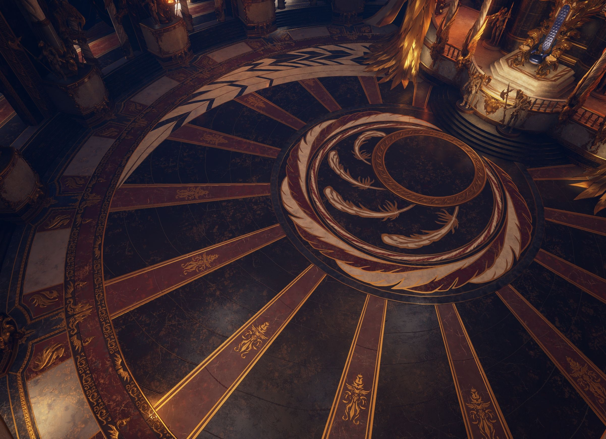

The Chamber of Sorcerers

You enter the Chamber of Sorcerers to find 9 mentors standing in a circle. Grindol takes his place among them and gestures for you to stand in the center of their circle.
"Now you must choose where you ascend, where you become a true sorcerer," He and the others begin a spell, turning their palms out and motioning a circle. Two portals appear at each of your sides, they look the same and you cannot see through to the other side.
There is only one way to know where you're going, so which do you choose?